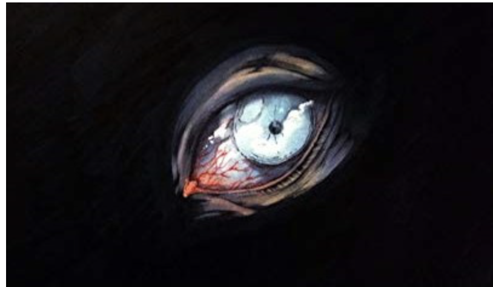

Feeling "Poe-sitively" inspire to Write!
Using Edgar Allen Poe in the Classroom!
Our first topic: Teaching The Tell Tale Heart

Teaching "The Tell Tale Heart" is one of my favorite lessons & one of my favorite short stories to read with my 8th graders every year!
We always read this out as a whole class & I use the read aloud on Youtube with my students. The first time we listen to the story in its entirety and the second time is where I pause and we talk through what has been read and what has stood out to students. While we are reading students are completing an annotation guide! Tell Tale Heart Annotations
After we have read through the story twice and have discussed things like foreshadowing, figurative language, symbolism, and the elements of plot I have students complete a one pager! Tell Tale Heart One Pager Template
©2026 Halcomb. All rights reserved.